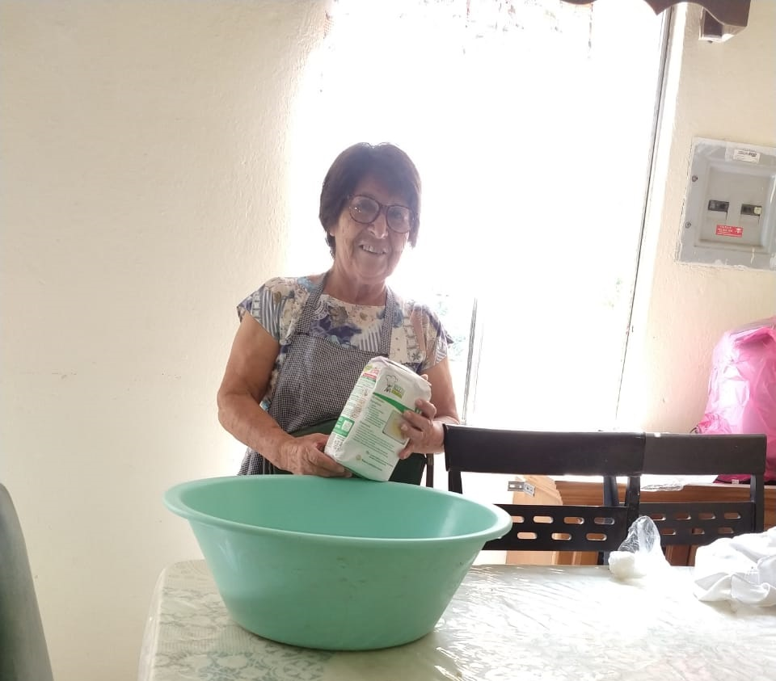

Nosotros

¿Quién es Marta? Marta es una humilde Persona que ama la cocina y que ama hacer tamales. Ella es una madre de familia que tiene 4 hijos, fueron una familia de pocos recursos pero gracias a que siempre fue trabajadora los saco adelante, ahora ellos son padres y madres de familia y estan siguiendo el ejemplo de su mamá.
¿Por qué se hizo esta página? Marta siempre a sido ha hecho tamales para su familia, y alguien de su familia le propuso esta idea, de crear una página web para que ella pudiera vender sus tamales y para que supiera todo el mundo de lo delicioso que están.